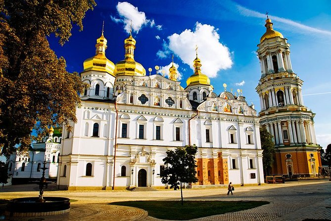
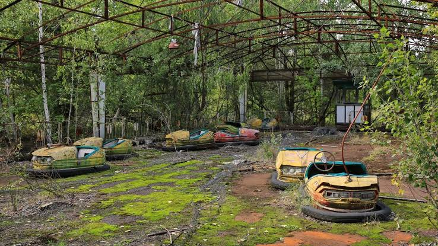
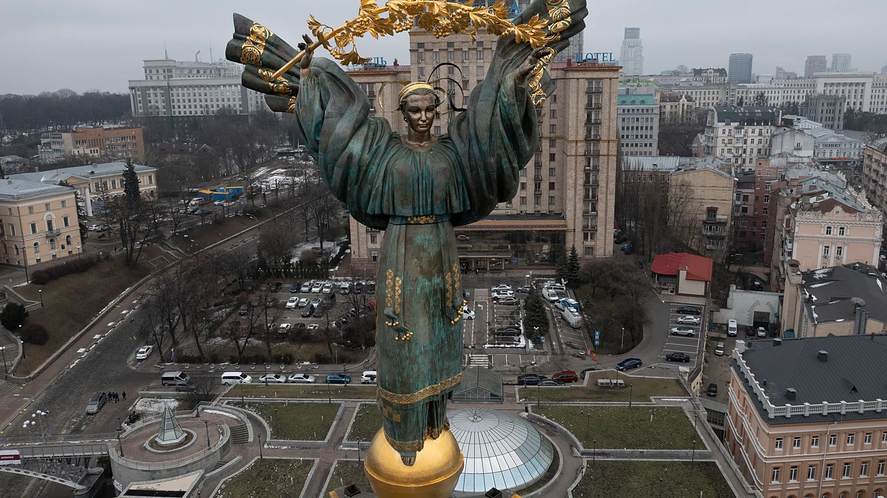

Da arquitetura religiosa de Kiev às ruas medievais de Lviv, até a zona de exclusão de Chernobyl (hoje aberta para visitas guiadas), a Ucrânia reúne destinos bem diferentes entre si.

Mosteiro das Cavernas de Kiev
Complexo monástico ortodoxo fundado em 1051, com igrejas cobertas de cúpulas douradas e catacumbas subterrâneas abertas para visitação.
Kiev
Centro Histórico de Lviv
Patrimônio Mundial da UNESCO, com uma praça central cercada por prédios que misturam estilos renascentista e barroco.
Lviv
Zona de Exclusão de Chernobyl
Área ao redor da usina nuclear acidentada em 1986, incluindo a cidade fantasma de Pripyat. Visitas só são permitidas em tours guiados e controlados.
Chernobyl
Praça da Independência
Principal praça de Kiev, palco de eventos históricos do país e ponto de encontro central da capital.
Kiev